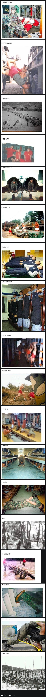

그 시절 정신병자급 군대 문화
댓글
분명 저 사람들중에서 내가 짬먹으면 다 없애야지하고 생각했다 후임들이 기어 오르면 다시 부활하고 무한반복
한강철교가 없네
해본게없군
한사람은 많지만 현실에서는 아무도 나오지않는 군대부조리..
군면제임?ㅋㅋ
난 오히려 부조리 몇개는 없애고나옴
다시 부활시켰는지는 모르겠는데 특히 상병 이전까지 포가락만 쓰게하는 좆같은것들 하지말라고함 대신 선임한테 존나처맞긴함
어휴 미개해
미개한 문화를 버텨내고 클린하게 자정시킨 선배세대한테 감사드림
진짜 시벌 뭔 저딴
20년대 군번인데 저 중 하나만 해도 깜빵각인데
미1개
저때 나약한 애들은 어케되는거임?
80~90년도 초반까지는 입영률 55~60퍼 전후밖에 안되긴 했음
90 후반에도 70퍼대였나, 암튼 나약한 애들은 다 빠졌겠지
자랑스럽도다 황군의 후예
저건 ㄹㅇ 쌍팔년도 군대고
라떼는 기억나는게 낚시라고 해서 근무나갔을때 소총 맨 앞대가리만 들고 낚시대처럼 버티는거임
ㄹㅇ ㅈㄴ무겁고 힘들어서 한 1분도 안돼서 손목이랑 팔이 부들부들 떨림.
비슷한걸로는 에어 좌경계총? 얘도 총 중간쯤 잡고 어디 받침 없이 손 쫙 뻗어서 버티는건데 이것도 보통사람이면 1분이면 팔 부들부들 떨리고 못버팀
저 울대치기는 해병대 나온 친구,동생한테 들어본적 있음 용어를 뭐라고 하던데 기억이 안나네
일꺾까지 보급슬리퍼 쓰지말라해서 안씀.. ㅅㅂ
샤워하러갈때도 양말 신발 신발도 못꺾어신음
라떼도 저깄는건 다 없어지긴 했는데
친부가 어렸을때부터 뭐 라떼 쌍팔년도 군대에선 이렇게 했다느니 하면서 저깄는거 다 시켜서 웬만하면 다해봄
특히 저기 짤에는 없는데 한강철교라고 사람 여러명 있으면 맨앞사람 대가리박고 뒷사람 어깨에 발올리고 또 그 뒷사람도 뒷사람 어깨에 발 올리고 무한반복하는 그런 기합이 있었음
그외에 소주병 뚜껑에 원산폭격하고 넘어지지말라고 배쪽에 선인장들 깔아놓고
시발 별의 별 기합을 다 받아봄..
해병대 울대치는거 ㅋㅋㅋ 저거 맞으면 일주일 넘게 밥이 잘안넘어간다고
아무것도 하지마가 제일 힘들어 밥먹고 작업하는 시간외에는 그냥 앉아서 관물대 상단만 쳐다봐야하는데 한 일주일 관물대 상단만 쳐다보면 미쳐버릴꺼 같음. 그냥 한대쳐맞거나 좀 구르고 말지...
ㄹㅇ 저건 미친건가